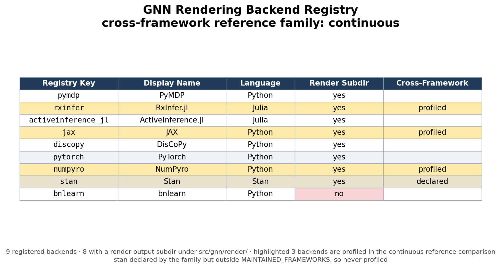
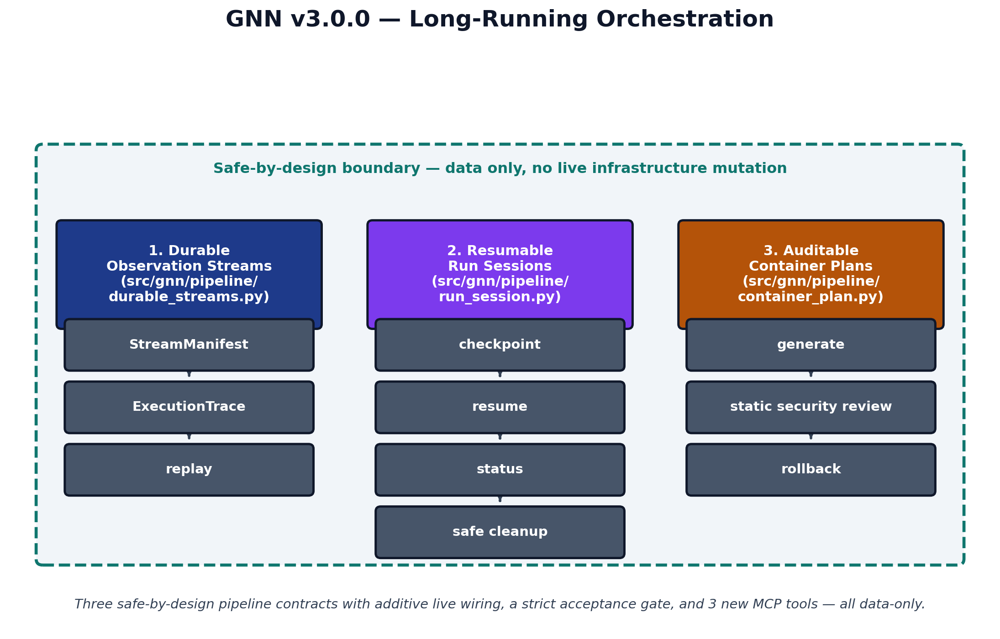

Methods
The GeneralizedNotationNotation (GNN) method is realized as a sequence of deterministic transformations that take a plain-text model specification and carry it through parsing, validation, code generation, execution, and reporting. The processing pipeline is organized into 25 numbered steps (steps 0–24), each implemented as a standalone module with a single responsibility. The methods below describe the path that a model travels from notation to executable cognitive model and back to analyzed results. Every quantity reported in this section is produced from the live repository rather than asserted by hand; the closing subsection makes that contract explicit.
Parsing and Multi-Format Export
The pipeline begins by ingesting GNN model files written in the plain-text notation. Parsing (step 3) reads each specification, builds an internal model representation, and re-emits it across a family of structured export formats so that downstream tools, and human readers, can consume the same model through whichever serialization they prefer. The corpus that exercises this stage spans 30 example model files organized into 11 curated corpora, ranging from minimal perception fixtures used to test the parser to larger hierarchical and multi-agent models. The presence of hierarchical fixtures should be read as a coverage target, not as a claim that every current backend fully executes every hierarchical formulation; scaling hierarchical active inference remains an active research problem in its own right [rangarajan2026hierarchicalSuccessor]. Treating parsing and export as a single round-trippable stage means a model authored once becomes immediately available as a typed object, a normalized text form, and machine-readable serializations without any manual re-encoding.
Type Checking and Validation
A model that parses is not yet a model that is well-formed. Steps 5 and 6 apply type checking and validation to confirm that the state spaces, observation modalities, control factors, and the matrices relating them are mutually consistent before any code is generated. This catches dimensional mismatches and malformed factor structures at the notation level, where the diagnostic is cheap and legible, rather than allowing them to surface as opaque runtime errors deep inside a numerical backend. Validation here is the gate that protects every later stage: rendering, execution, and analysis all assume a model that has already been certified consistent.
Rendering to Multiple Backends
The central act of the “Triple Play” is turning a validated specification into executable cognitive models. The rendering stage emits backend-specific code for 9 registered target frameworks — PyMDP, RxInfer.jl, ActiveInference.jl, JAX, DisCoPy, PyTorch, NumPyro, Stan, bnlearn — so that a single GNN model can be instantiated as a simulation in whichever computational ecosystem a researcher already works in; coverage across the family-by-backend matrix is uneven and is recorded explicitly (see @sec:limitations_next_steps). Each backend is addressed through a registry key that maps the abstract model onto that framework’s idioms for representing generative models and performing inference. The full mapping from registry key to backend is given below.
| Registry key | Backend | Executes |
|---|---|---|
pymdp |
PyMDP | yes |
rxinfer |
RxInfer.jl | yes |
activeinference_jl |
ActiveInference.jl | yes |
jax |
JAX | yes |
discopy |
DisCoPy | yes |
pytorch |
PyTorch | yes |
numpyro |
NumPyro | yes |
stan |
Stan | yes |
bnlearn |
bnlearn | render-only |
The registry surface of these backends — registry key, display name, implementation language, and which of them the cross-framework gate compares — is summarized in @fig:backend_matrix; the family-by-backend coverage itself is shown in @fig:family_matrix.

By generating code rather than asking authors to port models by hand, the method keeps a single source of truth in the notation while still reaching the discrete message-passing libraries [heins2022], reactive message-passing lineage [bagaev2021reactiveMessagePassing], and categorical, diagrammatic frameworks [defelice2021] that different research communities have built. The underlying mathematics that compatible backends share — inference and policy selection over discrete state spaces under the free-energy objective [dacosta2020; smith2022] — is the common substrate the renderer attempts to preserve; where a backend cannot express a family faithfully, GNN records that boundary as an explicit unsupported status rather than treating all registered backends as equivalent.
Execution
Generated backend code is not left as a static artifact. The execution stage (step 12) runs the rendered models, driving the inference and behavior that the notation describes and producing concrete traces, beliefs, and outputs. This closes the loop from text to running cognitive model: the same specification that was type-checked and exported is now exercised numerically, so that claims about a model’s behavior rest on having actually run it rather than on inspection of the source alone.
Long-Running Orchestration Contracts
GNN 3.0.0 extended the pipeline with three safe-by-design orchestration contracts that let an extended run be observed, paused, resumed, and audited without ever mutating live infrastructure. Durable observation streams record file- and array-backed stream manifests with content checksums and replayable execution traces, so that a long run can be re-derived deterministically before any live sensor or device-backed stream is introduced. Resumable run sessions carry run-session manifests with atomic checkpoint and resume, status inspection, and cancellation-safe cleanup, so that an extended model-family acceptance run can be interrupted and resumed without corrupting partial state. Auditable container plans generate hardened container plans together with an explicit static security review and a rollback descriptor, deliberately stopping short of touching any real cluster. Each contract only generates and validates data; none performs live mutation, and each is governed by a strict acceptance gate and exercised through dedicated Model Context Protocol tools. @fig:orchestration shows how the three contracts compose into one inspectable orchestration surface.

Analysis, Visualization, and Reporting
The final group of stages turns execution results into interpretable evidence. Analysis (step 16) processes the outputs of execution into structured findings; visualization (step 8) and the rendering of figures (step 9) translate model structure and results into graphical form, supporting the graphical leg of the Triple Play; and the reporting stage (step 23) assembles these artifacts into a coherent summary of what the model is and how it behaved. Because each stage writes its outputs to a known location, the chain from a notation file to a finished report is fully traceable, and any figure or number in a report can be followed back to the step and model that produced it.
Reproducibility and Auto-Injection
Every count reported in this manuscript is emitted by the producer
scripts/z_generate_manuscript_variables.py from the
repository state at commit 043d5b96d, not typed by hand. The producer
reads that commit’s source surfaces directly — the step modules, the
source tree, the model-family manifest, and the framework registry —
together with the project’s maintained ledgers, notably the Model
Context Protocol tool audit (src/gnn/mcp/audit_report.json,
itself regenerated by the test suite). From these it emits a manifest of
named tokens — counts of pipeline steps, source packages and files,
model families, backends, example files, tests, and tools — which the
renderer substitutes into the prose at build time. Filesystem-derived
counts are recomputed on every run; ledger-derived counts (such as the
backend registry) are re-read from a fixed repository state, so a fixed
repository state yields the same values, and authors are prohibited from
hard-coding any number that has a corresponding token. This makes the
manuscript a faithful, regenerable description of the system it
documents: when the 25-step pipeline, the 9 rendering backends, or the
30-file example corpus change, the reported numbers change with them on
the next build, and scripts/check_manuscript_tokens.py
fails the build if a section reintroduces a literal that a token already
owns.